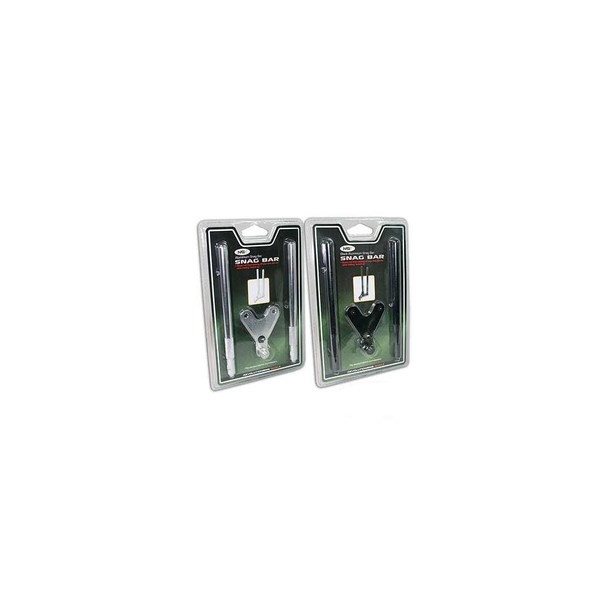

Meškerės - UAB Žvejo kultas
 Prisijungti Krepšelis: 0 0Prekių nėra
PVM : 0,00€ Viso : 0,00€Kainos su PVM
Pirkti
Prekė sėkmingai pridėta į krepšelį Kiekis: Viso: Krepšelyje yra 0 prekė (-ės). Krepšelyje yra 1 prekė. Prekės viso (su PVM) PVM 0,00€ Viso (su PVM) Tęsti apsipirkimą Pereiti prie apmokėjimo Menu Katalogas Ritės Spininginės Dugninės/Karpinės Plūdinės Jūrinės Multiplikatorinės Dalys Muselinės Meškerės Spininginės Dugninės/Karpinės Plūdinės Jūrinės Dalys Dirbtiniai masalai Vobleriai Guminukai Blizgės Sukriukės Dėžės masalams Pilkeriai Valai, Pavadėliai Pintas valas Monofilamentinis valas Fluorokarboninis valas Pavadėlinis valas Jūrinis valas Pavadėliai Jaukai ir priedai Jaukai Boiliai Priedai jaukams Peletės, Granulės Aksesuarai Gyvi masalai Įrankiai, Aksesuarai Peiliai Replės Svarstyklės Dėklai Graibštai, Sieteliai Prožektoriai Meškerių stovai Aksesuarai Dėžės Įrankiai Kibimo indikatoriai Kabliukai, galvakabliai, šėryklos ir kt. Kabliukai Galvakabliai Suktukai, Segtukai Svareliai Šėryklės Sistemėlės Avalynė, Apranga Avalynė Kostiumai Bridkelnės Bliuzonai, Džemperiai Marškiniai, Liemenės Apatiniai Striukės Kelnės Pirštinės Kojinės Kepurės, Kaukės Akiniai Valtys, Varikliai, Elektronika Valtys Varikliai Echolotai Aksesuarai Akumuliatoriai, pakrovėjai Turizmas Kėdės, Gultai Palapinės Kuprinės, Krepšiai Gelbėjimosi liemenės Miegmaišiai Pjūvenos, Rūkyklos Plūdės ir priedai Plūdės Priedai Žiemai Apranga Meškerės Ritės Dėžės Masalai Grąžtai Jaukai Rogės Sargeliai Aksesuarai Sistemėlės Balansyrai Valai Blizgutės Avižėlės Palapinės Termosai Dovanų kuponas Dalys Akcijos Naujos prekės Perkamiausios Gamintojai Kontaktai Pagrindinis MeškerėsMeškerės
Rodoma 1 - 18 iš 203 Filtras
Meškerė Okuma Ceymar River Feeder Meškerė Okuma Ceymar River Feeder
58,90€Okuma Ceymar “Feeder” ir “Match” meškerės ypatingai liaunos, tačiau tvirtos dėl ypatingos anglies konstrukcijos, kuri sutvirtinta nerūdijančio plieno rėmeliu, poliruotomis „Oxide“ titano detalėmis ir grafitine ritės vieta.
Į krepšelį Akcija! -40%Spiningas DAM HPN Pro Spin IM6 Spiningas DAM HPN Pro Spin IM6
22,74€ 37,90€DAM HPN Pro tai įpatngos konstrukcijos spininginis kotas, kurio blankas pagamintas iš anglies ir stiklo pluošto mišinio.
Į krepšelį Išparduota!Spiningas DAM Whisler Light Jig Spiningas DAM Whisler Light Jig
32,90€Meškerės DAM Whisler Light Jig - iš anglies pluošto pagaminti spiningai ne tik atrodo gerai, bet yra ir labai "smagūs". DAM Whisler Light Jig spiningai - "džiginiai", su įklijuotomis viršūnėlėmis, puikiai perduodančiomis ir atsargiausių plėšrūnių masalų krimstelėjimus.
Į krepšelį Akcija!Spiningas DAM Whisler Ultra Light Jig Spiningas DAM Whisler Ultra Light Jig
28,90€DAM Whisler Ultra Light Jig - iš anglies pluošto pagaminti spiningai ne tik atrodo gerai, bet yra ir labai "smagūs". DAM Whisler UL jig spiningai - "džiginiai", su įklijuotomis viršūnėlėmis, puikiai perduodančiomis ir atsargiausių plėšrūnių masalų krimstelėjimus.
Į krepšelį Išparduota!Spiningas Okuma Safina X-Spin Spiningas Okuma Safina X-Spin
31,90€Okuma Safina X-Spin - 2-jų dalių spiningų serija. Šių meškerių kotas plonas, elegantiško dizaino, pagamintas iš anglies kompozito pluošto.
Spiningas Okuma Dead Ringer Spin Spiningas Okuma Dead Ringer Spin
34,40€„Dead ringer“ serija – didžiausia „Okuma“ visos Europos meškerių programa. Apima visus šiuolaikinius parametrus ir žvejų poreikius.
Spiningas Okuma Dead Ringer Ultra Light Jig Spiningas Okuma Dead Ringer Ultra Light Jig
24,89€ 35,55€Naujieji „Okuma Dead Ringer“ kotai yra didžiausia „PAN European“ kotų programa, kuri koncentruojasi į šiuolaikines technologijas, šiuolaikine masalų gamyba, žvejų poreikius. Kas labiausiai traukia žvejų akį į būtent šiuos modelius, tai yra ypač lengvas 24T anglies tuščiavidurė konstrukcija.
Sumažinta kaina! Į krepšelį Akcija! -30%Spiningas DAM FZ Nova Spin Spiningas DAM FZ Nova Spin
34,23€ 48,90€Naujoji DAM EFFZETT® spiningų serija sukurta šiuolaikiniam žvejui, žinančiam savo vertę. Puikus pasirinkimas tiek patyrusiam, tiek pradedančiajam žvejui, kuris ieško aukštos kokybės už prieinama kaina.
Į krepšelįSpiningas Okuma Epixor Spiningas Okuma Epixor
52,90€Naujieji „Okuma Epixor“ kotai, tai 2018 metų naujas modelis, meškerykotis turi 30/36 tonų anglies pluoštą, kas reiškia, kad jis yra itin lengvas, plonas ir subalansuotas.
Į krepšelįJūrinė meškerė Okuma Solterra Boat Jūrinė meškerė Okuma Solterra Boat
102,90€Kietas meškerykotis skirtas sunkiausiai žvejybai. E-stiklas kartu su aukštos moduliacijos anglies pluošto sėkmingai sudarė tvirtą, beveik nesulaužomą spiningą. Puikus įrankis gaudyti laukines ir verslines žuvis, net tokias kaip tunas, otas, dideles menkes ir jūros ungurius. Bekompromisiniai sprendimai dizaino ir komponentų parinkimui, tarp kurių dauguma...
Į krepšelįJūrinė meškerė Okuma Classic Boat Jūrinė meškerė Okuma Classic Boat
40,90€Meškerė Okuma Classic Boat 3 dalių Lengvas, aukštos klasės anglies pluoštas Stiprūs, korozijai atsparūs Sic žiedeliai Ilga, ergonomiška rankena Japoniška EVA rankenos medžiaga Kokybiškas ritės laikiklis
Į krepšelįJūrinė meškerė Okuma Cortez Black Jūrinė meškerė Okuma Cortez Black
72,90€Meškerė Okuma Cortez - tvirta jūrinė meškerė, skirta žūklei Norvegijos jūroje susigrumti su trofėjinėmis žuvimis: atlanto otais, didžiulėmis menkėmis, saidomis... Meškerės blankas pagamintas iš anglies pluošto, yra dviejų dalių, su neoprenine rankena ir patikimu Fuji ritės laikikliu.
Į krepšelįJūrinė meškerė Okuma Trio Rex Surf Jūrinė meškerė Okuma Trio Rex Surf
79,90€„Trio Rex“ kotai yra pagaminti iš greitų ir stiprių Korėjos aukštos kokybės anglies medžiagų, naudojančių druskingoms medžiagoms atsparias sudedamąsias dalis, siekiant užtikrinti maksimalų efektyvumą.
Į krepšelįPlūdinė meškerė Okuma Solitron Match Plūdinė meškerė Okuma Solitron Match
55,90€Okuma Solitron Match tipo meškerykotis, pagamintas iš itin aukštos kokybės 24T anglies pluošto, skirtas gaudyti plūdine meškere.
Į krepšelįPlūdinė meškerė Okuma Ceymar Match Plūdinė meškerė Okuma Ceymar Match
43,90€Okuma Ceymar “Feeder” ir “Match” meškerės ypatingai liaunos, tačiau tvirtos dėl ypatingos anglies konstrukcijos, kuri sutvirtinta nerūdijančio plieno rėmeliu, poliruotomis „Oxide“ titano detalėmis ir grafitine ritės vieta.
Į krepšelįPlūdinė meškerė Okuma Astral Bolognese Plūdinė meškerė Okuma Astral Bolognese
32,90€Aukštesnio lygio Okuma Astral Bolognese teleskopinė meškerė - optimalaus kainos / kokybės santykio įrankis.
Meškerė Okuma Custom Black Meškerė Okuma Custom Black
62,90€Okuma naujiena, Custom Black karpiniai meškerykočiai. Aukšta anglies klasė, tvirtas ritės laikiklis. 3.90m ilgio meškerykotis su 50mm didžiuoju žiedu
Meškerė (Spininginė) Shimano Catana EX Meškerė (Spininginė) Shimano Catana EX
26,10€ 29,00€Naujieji Shimano Catana EX spiningai. EX tai yra atnaujintas DX modelis. Atnaujintas Catana EX modelio blankas visiškai atitinka nurodytus svorio užmetimo parametrus.
Tik internetinėje parduotuvėje Sumažinta kaina! 1 2 3 ... 12Meškerės
Ritės Spininginės Dugninės/Karpinės Plūdinės Jūrinės Multiplikatorinės Dalys Muselinės Meškerės Spininginės Dugninės/Karpinės Plūdinės Jūrinės Dalys Dirbtiniai masalai Vobleriai Guminukai Blizgės Sukriukės Dėžės masalams Pilkeriai Valai, Pavadėliai Pintas valas Monofilamentinis valas Fluorokarboninis valas Pavadėlinis valas Jūrinis valas Pavadėliai Jaukai ir priedai Jaukai Boiliai Priedai jaukams Peletės, Granulės Aksesuarai Gyvi masalai Įrankiai, Aksesuarai Peiliai Replės Svarstyklės Dėklai Graibštai, Sieteliai Prožektoriai Meškerių stovai Aksesuarai Dėžės Įrankiai Kibimo indikatoriai Kabliukai, galvakabliai, šėryklos ir kt. Kabliukai Galvakabliai Suktukai, Segtukai Svareliai Šėryklės Sistemėlės Avalynė, Apranga Avalynė Kostiumai Bridkelnės Bliuzonai, Džemperiai Marškiniai, Liemenės Apatiniai Striukės Kelnės Pirštinės Kojinės Kepurės, Kaukės Akiniai Valtys, Varikliai, Elektronika Valtys Varikliai Echolotai Aksesuarai Akumuliatoriai, pakrovėjai Turizmas Kėdės, Gultai Palapinės Kuprinės, Krepšiai Gelbėjimosi liemenės Miegmaišiai Pjūvenos, Rūkyklos Žiemai Apranga Meškerės Ritės Dėžės Masalai Grąžtai Jaukai Rogės Sargeliai Aksesuarai Sistemėlės Balansyrai Valai Blizgutės Avižėlės Palapinės Termosai Plūdės ir priedai Plūdės Priedai Dovanų kuponasKatalogas